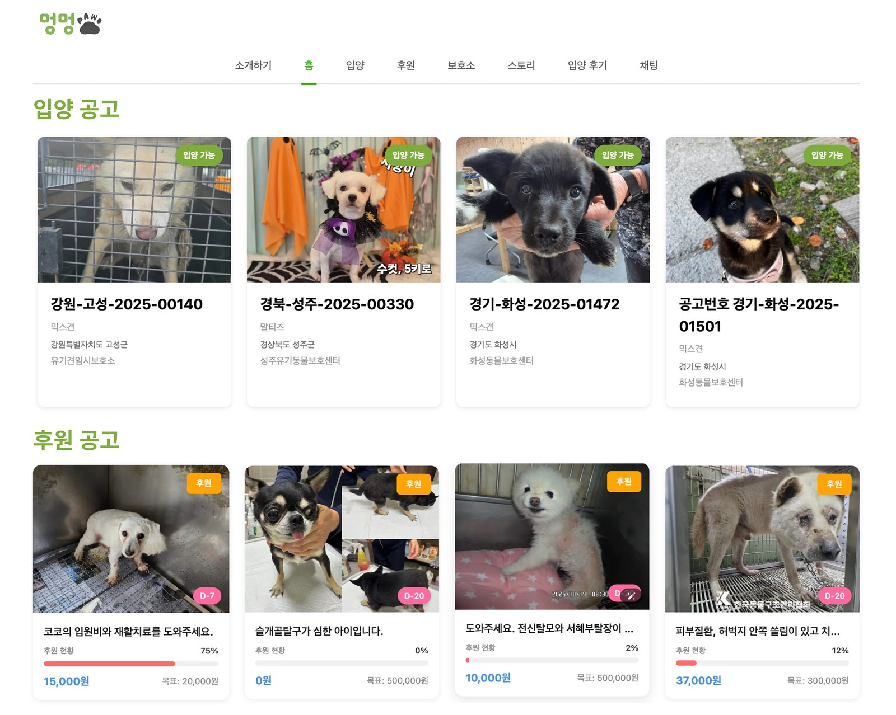
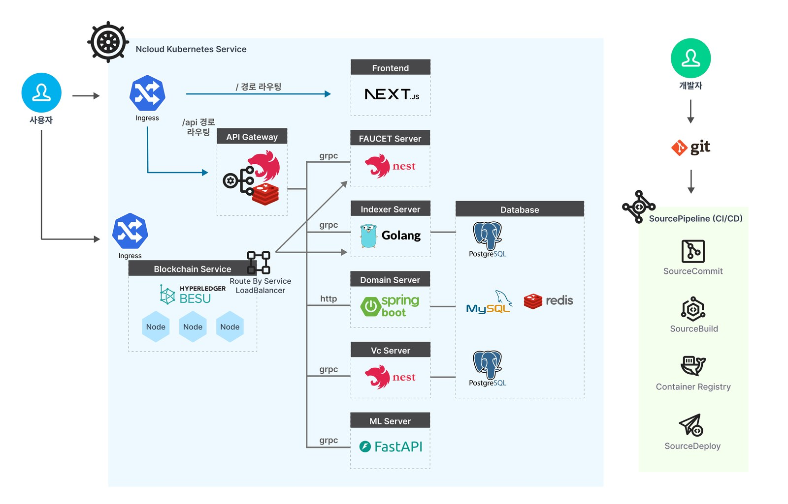
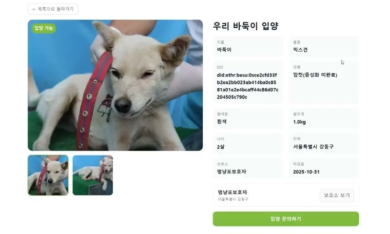
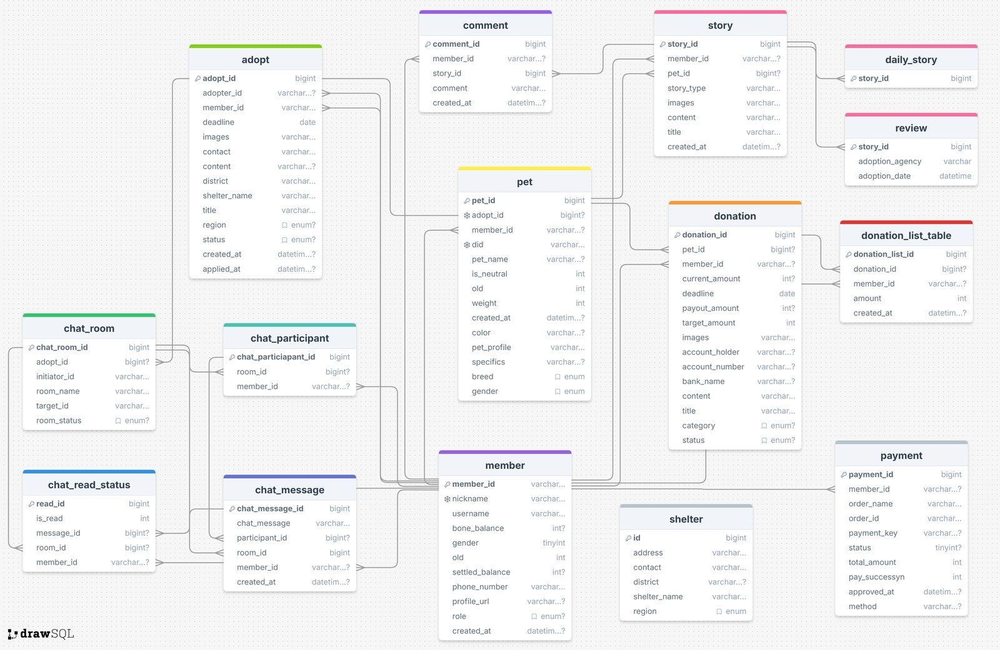

01상황: 어떤 프로젝트이고 무엇을 해결하는가
멍멍포는 유기견의 존재를 기록하고 입양과 후원을 잇는 웹 서비스입니다. 팀 README의 첫 문장은 "한 마리의 유기견도 잊히지 않도록"입니다.
2024년 한 해 동안 보호센터에 들어온 유실·유기동물은 약 10만 7천 마리입니다. 그중 18.5%가 안락사됐습니다(농림축산검역본부 2024년 반려동물 보호·복지 실태조사). 팀은 문제를 세 가지로 정리했습니다.
- 문제 1. 신원
- 유기견에게는 고유한 식별번호가 없습니다.
- 문제 2. 입양
- 정보가 적고 절차가 불편합니다.
- 문제 3. 후원
- 보호소에 관리 비용이 모자라 안락사로 이어집니다.
- 해결 방식
- 비문(코 무늬) 사진으로 반려동물마다 고유한 신원을 줍니다. 실시간 채팅과 입양 후기로 입양 문턱을 낮춥니다. 충전식 화폐 '뼈다귀'(1뼈다귀 = 1,000원)로 후원을 받습니다.
신원은 DID로 만들었습니다. DID는 중앙 기관 대신 블록체인에 등록하는 식별자입니다. 반려동물마다 만든 DID를 이 글에서는 펫 DID라고 부릅니다. VC는 누가 이 반려동물의 보호자인지 담은 증명서입니다. VP는 로그인할 때 자기가 가진 VC를 묶어 내는 제출물입니다.

사용자
- 보호자(보호소 포함)는 반려동물을 등록하고 입양 공고를 올립니다. 입양 상대가 정해지면 입양을 승인하고 보호자 변경에 서명합니다.
- 입양 희망자는 1:1 채팅으로 상담합니다. 승인이 나면 VC에 서명하고 비문 사진을 올립니다. 입양이 끝나면 새 보호자로 VC를 받습니다.
- 후원자는 뼈다귀를 충전해 후원 공고에 보냅니다.
블록체인에 맡긴 일
팀 README는 블록체인을 쓴 이유로 '투명한 신원'과 '투명한 소유권 이전'을 듭니다. 그래서 설계를 다음과 같이 잡았습니다.
- 펫 DID와 현재 보호자는 컨트랙트에 둡니다.
- 컨트랙트에서 보호자는 현재 보호자의 지갑 서명으로만 바뀝니다.
- 개인정보는 해시만 체인에 올립니다.
- 체인은 직접 띄운 Besu 프라이빗 체인입니다. 새로 가입한 지갑에는 Faucet 서버가 테스트 코인을 보내, 사용자가 실제 돈 없이 트랜잭션을 보낼 수 있게 했습니다.
검증 노드가 1개인 시연용 체인이라, 운영자와 독립된 기록이라고까지 하지는 않습니다.
02과제와 역할
팀 목표는 회원가입부터 반려동물 등록, 입양, 후원까지 실제로 동작하는 서비스를 클라우드에 올려 시연하는 것이었습니다. K-PaaS 공모전 출품작이라 NCP Kubernetes에 올렸습니다. 저는 팀장으로 기획을 이끌고 전체 구조를 그렸습니다.
- 직접 설계하고 개발
- Besu 노드 3개를 NCP Kubernetes에 띄워 운영하고 합의를 Clique에서 QBFT로 변경 / 컨트랙트 2개(PetDIDRegistry, GuardianRegistry) 개발과 배포 / NestJS API Gateway(이하 게이트웨이): 지갑 로그인과 VP 검증, 트랜잭션 확정 확인, 큐, Spring 프록시, 채팅 소켓 / 내부 gRPC 서버 4개(VC 서버, ML 서버, 인덱서, Faucet) / 서비스별 Dockerfile과 Kubernetes 매니페스트
- 팀원이 맡은 부분
- 입양 공고, 후원과 결제, 스토리, 채팅 메시지 저장을 맡는 Spring 서버(백엔드 팀원), 화면(Next.js, 프런트엔드 팀원)
풀어야 할 기술 과제
- 비문 사진으로 DID를 만들고, 다시 찍은 사진으로 같은 강아지인지 확인하기
- 체인과 여러 서버의 DB가 어긋나지 않게 순서 정하기
- 지갑 서명으로 로그인하고, 세션이 가진 VC를 증명하게 하기
- Besu 노드 3개를 Kubernetes에서 OOMKilled 없이 돌리기
03해결 과정
1. 아키텍처

아래 목록에서 표시가 없는 항목은 직접 설계하고 개발했습니다. 팀원이 맡은 항목은 "(팀원 개발)"로 적었습니다.
- Ingress 2개: 서비스용은
/를 화면으로,/api를 게이트웨이로 보냅니다. 다른 하나는 사용자 지갑이 Besu RPC로 트랜잭션을 보내는 입구입니다. - 게이트웨이 (NestJS): 모든 요청의 입구입니다. 로그인, 컨트랙트 호출 데이터 준비, 트랜잭션 확정 확인, 큐 처리를 맡습니다.
- VC 서버 (NestJS): 보호자와 보호소 정보, 펫 VC를 저장하고 무효화합니다.
- ML 서버 (FastAPI): 비문 사진을 512차원 벡터로 바꾸고 유사도를 계산합니다.
- 인덱서 (Go): 체인의 보호자 변경 이벤트를 모아 반려동물별 이력으로 저장하도록 만든 서버입니다.
- Faucet (NestJS): 새로 가입한 지갑에 테스트 코인을 보냅니다.
- Spring 서버 (MySQL, 팀원 개발): 입양 공고, 후원, 결제, 스토리, 채팅 메시지를 저장합니다.
- Besu 노드 3개: 블록 생성 노드 1개와 RPC 노드 2개를 StatefulSet과 PVC로 띄웠습니다.
- Redis 2개: 클러스터 안 Redis는 큐 전용입니다. 외부 관리형 Redis는 로그인 토큰과 VP, 채팅 메시지 전달에 씁니다.
게이트웨이와 내부 gRPC 서버 4개는 gRPC로 연결하고 proto 파일로 형식을 고정했습니다. 팀원이 만든 Spring 서버만 HTTP로 연결했습니다.
2. 주요 흐름
흐름 1. 반려동물 등록하기
- 화면이 비문 사진을 저장소 임시 폴더에 올립니다.
- 게이트웨이가 사진을 ML 서버로 보내 512차원 벡터를 받습니다.
- 게이트웨이가 벡터를 keccak256으로 해시해
did:ethr:besu:<해시>를 펫 DID로 정합니다. - 게이트웨이가 트랜잭션 2개의 호출 데이터와 VC 서명 데이터를 돌려줍니다. 트랜잭션 2개는 반려동물 등록과 보호자-펫 연결입니다.
- 사용자가 지갑으로 두 트랜잭션을 보내고 VC에 서명합니다.
- 게이트웨이가 반려동물 등록 트랜잭션의 확정을 기다린 뒤 바로 응답합니다.
- 사진 이동, 보호자-펫 연결 트랜잭션 확인, VC 저장은 큐로 넘깁니다. Spring 동기화는 사진 이동이 끝난 뒤 이어서 합니다.

흐름 2. 입양으로 보호자 바꾸기
- 입양 희망자가 공고에서 1:1 채팅으로 상담합니다.
- 현재 보호자가 채팅방에서 입양을 승인합니다. 게이트웨이가 체인에서 현재 보호자를 확인하고, 새 보호자가 서명할 VC 데이터를 만듭니다.
- 현재 보호자가 지갑으로 보호자 변경 트랜잭션을 보냅니다. 확정되면 진행 상태를 Redis에 24시간 둡니다.
- 입양자가 VC 데이터에 서명합니다.
- 입양자가 비문 사진을 올립니다. ML 서버가 저장한 벡터와 비교해 기준값을 넘는지 봅니다.
- 입양자가 입양을 마치면, 게이트웨이가 10분 안에 받은 비문 검증 결과가 있는지 봅니다. 이어서 보호자 변경 트랜잭션의 확정을 다시 확인합니다.
- 이전 보호자 VC 무효화, 새 보호자 VC 생성, Spring 반영은 큐로 넘깁니다.
- 입양자는 다음 로그인부터 이 반려동물의 VC를 담은 VP를 냅니다.
3. 설계 고민과 결정
체인과 여러 서버 DB 중 무엇을 먼저 바꿀까
- 고민: 반려동물 하나를 등록하면 체인, VC 서버, Spring, 사진 저장소 네 곳이 바뀝니다. 중간에 하나가 실패하면 서로 어긋납니다.
- 선택지: 모든 서버를 동기 호출로 묶는 방법, 실패하면 앞 단계를 되돌리는 방법(보상 트랜잭션), 체인을 먼저 확정하는 방법이 있었습니다.
- 결정: 체인을 먼저 확정하고 나머지는 큐로 맞췄습니다. 체인에 남은 기록은 되돌릴 수 없어서 보상 트랜잭션은 성립하지 않았습니다. 동기 호출은 서버 수만큼 사용자가 기다립니다. 큐는 용도별로 나눴습니다. 실패하면 간격을 늘려 가며 최대 3번까지 시도하게 했습니다. 끝내 실패한 작업은 지우지 않고 남겼습니다. 대신 응답 직후에는 Spring 화면에 반려동물이 늦게 보일 수 있습니다.
트랜잭션 서명을 누가 할까
- 고민: 서버 키로 대신 등록하면 흐름이 단순합니다. 하지만 체인 기록의 주체가 서버가 됩니다.
- 선택지: 서버가 대신 서명하는 방법, 사용자 지갑이 서명하는 방법이 있었습니다.
- 결정: 사용자 지갑이 서명하게 했습니다. 게이트웨이는 호출 데이터만 만들어 줍니다. 컨트랙트에서 보호자 변경은 현재 보호자만 호출할 수 있게 막았습니다. GuardianRegistry의 보호자-펫 연결도 보호자 본인만 바꿀 수 있습니다. 그래서 입양 뒤 이 연결은 서버 큐가 대신 고칠 수 없었습니다. 입양 때 기준은 PetDIDRegistry의 현재 보호자 하나로 정했습니다.
로그인 세션에 무엇을 담을까
- 고민: 지갑 주소만으로 로그인하면 이 사람이 어떤 반려동물의 보호자인지 매번 따로 조회해야 합니다.
- 선택지: 주소만 담은 토큰, 보유한 VC를 모두 담은 VP를 묶은 토큰이 있었습니다.
- 결정: 토큰에 VP를 묶어 VP 하나를 세션 하나로 삼았습니다. 매 요청의 서명 검증 비용은 결과를 1시간 캐시해 줄였습니다. 지갑은 메시지 앞에 이더리움 접두사를 붙여 서명합니다. VC와 VP 서명 검증은 표준 라이브러리 대신 이 서명 방식에 맞춰 직접 만들었습니다.
펫 DID를 무엇으로 만들까
- 고민: 같은 강아지라도 사진을 찍을 때마다 벡터가 조금씩 다릅니다.
- 선택지: 처음 계획은 비슷한 벡터에서 항상 같은 키를 다시 만드는 Fuzzy Extractor였습니다.
- 결정: 최종 구현은 첫 벡터의 해시를 DID로 쓰고, 같은 강아지인지는 서버에서 유사도로 판정하는 방식입니다. 대가로 같은 강아지를 다른 사진으로 등록하면 다른 DID가 나와, 이중 등록을 막지 못합니다.
보호자 변경 이력을 어디서 읽을까
- 고민: 이력을 매번 체인에서 조회하면 노드에 부담이 가고 RPC 조회 범위 제한에 걸립니다.
- 선택지: 체인을 직접 조회하는 방법, 별도 인덱서가 이벤트를 DB에 모으는 방법이 있었습니다.
- 결정: Go 인덱서를 따로 두었습니다. 반려동물별 이전 순번을 매기려면 이벤트가 순서대로 들어와야 합니다. 그래서 인덱서는 하나만 뜨게 했습니다(replicas 1, Recreate). 인덱서가 멈추면 게이트웨이가 체인을 직접 조회합니다. 그것도 실패하면 현재 보호자만 돌려줍니다.
4. 구현 상세
게이트웨이
- 트랜잭션 해시를 받으면 1블록 확정을 30초까지 기다립니다.
- 되돌려진 트랜잭션은 같은 호출을
eth_call로 다시 실행해 실패 이유를 로그에 남깁니다. - 오류 메시지로 종류를 나누고 재시도 가능 여부를 붙였습니다. 네트워크 오류, RPC 오류, 시간 초과는 재시도할 수 있게 두었습니다. 되돌려진 트랜잭션은 재시도하지 않습니다.
- 되돌려진 이유(이미 등록됨, 권한 없음)는 오류 메시지 문자열로 추측해 나눴습니다. 지갑이 직접 보낸 트랜잭션이 되돌려지면 '알 수 없는 오류'로만 분류됩니다.
- 사진은 임시 폴더로 받고, 체인 확정 뒤 큐가 정식 경로로 옮깁니다. 체인이 실패하면 정식 경로에 불필요한 파일이 남지 않습니다.
- 큐 Redis는 디스크에 기록(AOF)하고 PVC에 두어 Pod가 다시 떠도 작업이 남게 했습니다.
컨트랙트와 Besu 네트워크
- PetDIDRegistry는 펫 DID, 비문 벡터 해시, 현재 보호자, VC 해시를 저장합니다. 보호자가 바뀌면
ControllerChanged이벤트를 냅니다. - GuardianRegistry는 보호자 개인정보 해시와 보호자-펫 연결을 저장합니다.
- Besu 노드는 노드마다 StatefulSet과 PVC를 두었습니다. RPC 노드는 시작할 때 DNS로 블록 생성 노드를 찾아 연결합니다.
내부 gRPC 서버
- ML 서버는 사진을 224×224로 맞추고, 학습된 임베딩 모델(ONNX)로 512차원 벡터를 만듭니다. 비교는 코사인 유사도로 합니다.
- 인덱서는 마지막으로 처리한 블록부터 1,000블록씩 끊어 따라잡습니다. 그다음 WebSocket으로 구독합니다. 구독에 실패하면 5초 간격 조회로 바꿉니다. 같은 이벤트는 UNIQUE 제약으로 한 번만 저장합니다.
04트러블슈팅
Besu 노드 2개가 계속 죽던 문제
- 문제
- 노드 2와 3을 붙이자 메모리 400Mi에서 OOMKilled가 반복됐습니다. 살아 있을 때도 "Waiting for 5 peers minimum" 로그만 남기고 동기화하지 않았습니다. 메모리를 1Gi까지 올려도 계속 죽었습니다.
- 원인
- Pod IP, 로그, 노드별 메모리 사용량을 하나씩 확인하며 좁혀 보니 네 가지가 겹쳐 있었습니다. 재시작하면 바뀌는 Pod IP를 bootnode 주소로 고정해 두었습니다. 최소 피어 수 기본값은 5인데 노드는 3개였습니다. 15일치 데이터(약 9만 블록)를 한 번에 따라잡으면서 메모리가 넘쳤습니다. 공통 설정에 블록 생성 옵션이 켜져 있었습니다.
- 해결
- 원인마다 하나씩 고쳤습니다. bootnode는 시작할 때 DNS로 찾게 바꿨습니다. 최소 피어 수는 1로 낮췄습니다. 데이터는 비우고 처음부터 다시 받았습니다. 블록을 만들지 않는 노드 2, 3은 블록 생성 옵션을 껐습니다.
- 결과
- 노드 2의 메모리는 392Mi에서 189Mi로, 노드 3은 388Mi에서 243Mi로 줄었습니다. 두 노드 모두 400Mi 제한 안에 들어왔습니다.
블록 시간을 줄이려다 합의를 바꾼 문제
- 문제
- 블록이 15초마다 나와서, 반려동물 등록 트랜잭션이 확정되기까지 약 30초가 걸렸습니다. Clique의 블록 주기를 5초로 바꿔 다시 띄웠지만 블록은 계속 15초마다 나왔습니다.
- 원인
- 당시에는 Clique 구현의 제한으로 판단했습니다. 다시 확인해 보니 genesis에 넣은 키(
period)는 Geth에서 쓰는 이름이었습니다. Besu가 읽는 Clique 키는blockperiodseconds이고, 기본값이 15초입니다. 키가 읽히지 않아 기본값이 그대로 적용된 것으로 봅니다. - 해결
- 합의를 QBFT로 바꾸고
blockperiodseconds를 5로 두었습니다. 이어서 생긴 문제도 풀었습니다. 합의 설정 값(extraData)은 손으로 인코딩하다 계속 틀려서 Besu 내장 도구로 만들었습니다. 체인을 처음부터 다시 만들고 컨트랙트를 다시 배포하자Invalid opcode: 0x5f(PUSH0)로 실패했습니다. 이 체인은 London 하드포크까지만 켜져 있어서, 컴파일러 대상을 london으로 맞췄습니다. - 결과
- 블록 생성은 15초에서 5초로, 트랜잭션 확정은 약 30초에서 약 10초로 줄었습니다 (블로그 기록값).
MetaMask가 서명만 하는 요청을 받지 않던 문제
- 문제
- 처음 설계는 사용자가 서명한 트랜잭션을 게이트웨이가 받아 보내는 방식이었습니다. 그런데 MetaMask는 서명만 하고 보내지 않는 요청을 지원하지 않았습니다.
- 원인
- MetaMask는 트랜잭션에 서명하면 바로 네트워크로 보냅니다. 그래서 게이트웨이는 서명된 원본을 받을 수 없었습니다.
- 해결
- 게이트웨이가 트랜잭션 해시도 받게 바꿨습니다. 해시가 오면 1블록 확정을 30초까지 직접 기다립니다. 되돌려진 트랜잭션은 같은 호출을
eth_call로 다시 실행해 실패 이유를 로그에 남겼습니다. - 결과
- 지갑의 제약 안에서도 "체인 확정 뒤에만 큐에 작업을 넣는다"는 순서를 지켰습니다.
05결과
- 상명대학교 핀테크·빅데이터융합·스마트생산 학술제 최우수상 (2026.01)
- 제9회 K-PaaS 활용 공모전 서비스 개발 부문 출품 (2025.10)
- NCP Kubernetes에 게이트웨이, 내부 gRPC 서버 4개, Spring 서버, 화면, Besu 노드 3개, 큐용 Redis, PostgreSQL을 올렸습니다.
- 회원가입과 로그인, 반려동물 등록, 채팅 상담과 입양까지 시연 영상으로 남겼습니다. 배포 화면에 비문 벡터 해시로 만든 펫 DID가 표시됩니다.
- 블록 생성 15초 → 5초, 트랜잭션 확정 약 30초 → 약 10초 (프라이빗 체인, 블로그 기록값)
마치지 못한 것
- 비문 검증 결과를 ML 서버 서명으로 체인에 기록하는 함수는 컨트랙트에 만들었습니다. 시연에서는 서버에서만 검증했습니다.
- 보호자 변경 트랜잭션이 입양 승인 때 먼저 확정되어, 비문 검증이 체인의 보호자 변경을 막지는 못했습니다.
- 같은 강아지의 이중 등록은 막지 못했습니다.
- 인덱서가 트랜잭션 입력에서 펫 DID를 읽는 부분에 함수 정의가 빠져 있어, 이력이 실제로 쌓였는지는 확인하지 못했습니다.

06배운 점
체인에 확정된 기록은 되돌릴 수 없어서, 여러 서버를 맞추는 순서부터 정해야 했습니다. 같은 이름의 설정도 클라이언트마다 키가 달랐습니다. 이제는 쓰는 클라이언트의 문서로 genesis 키를 먼저 확인합니다. 배포 전에는 체인의 하드포크 설정과 컴파일러 대상 버전도 함께 확인합니다.
07핵심 역량
- 01체인 확정 뒤 큐로 맞추는 서버 간 연동 설계
- 02Kubernetes 위 Besu 네트워크 구축과 장애 분석
- 03지갑 서명, DID, VC/VP 기반 인증